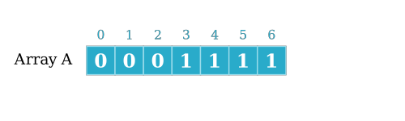
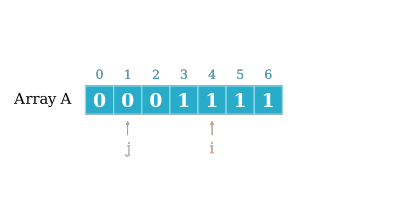

Técnicas de Programação
Busca em vetores
Algoritmo: sequência de passos (finita) para resolver um problema
Algoritmos
- escritos em pseudo-código (definido em sala)
- focam na resolução do problema e não em detalhes de implementação
- usamos ADT quando precisamos armazenar dados
- expectativas em relação ao comportamento
- expectativas em relação a eficiência
- linguagem consistente em relação a turma e a linguagens
Um pouco de história
Um dos seus clientes surge desesperado que a nova versão do software tem um bug que paralisou sua empresa. Após algumas investigações sua equipe consegue fazer um teste que reproduz o bug, mas ainda é necessário descobrir qual foi a mudança que o causou.
Queremos descobrir qual foi o commit que introduziu esse bug, que sabemos não estar presente na última versão liberada.
No commit mais novo tem bug
67957b0f23425 (HEAD -> modulo2, origin/main, origin/HEAD, main) pequenas modificações
6fd3c935d611e Atualização javaporco
b3892f2f3bd23 PDF dos slides - aula 01
694b44015206e Módulo 0 - Algoritmos está pronto.
0c1797563ebfa APS01 - fim
cabbeafe683c1 Ajustes da APS01
....
465d185d60fd1 Organização do repositório
127d20a195e9f First
ddf34a8aa4919 Update README.md
d18b19257fccc Initial commit
No commit mais velho não tem bug
Bug presente?

A[0]representa o commit mais antigoA[N-1]representa o commit mais novoA[I]é1se o bug está presente0caso contrário
Uma primeira solução
Em grupos:
- handout "Buscas básicas" (10 minutos)
Uma ideia mais sofisticada
Esse vetor tem algo que chama a atenção?
Uma ideia mais sofisticada
Estar ordenado significa:

$$i \geq j \leftrightarrow A[i] \geq A[j]$$
Uma ideia mais sofisticada
Para o índice i acima, o que posso dizer dos que estão à sua
- direita?
- esquerda?
Uma ideia mais sofisticada
Para o índice j acima, o que posso dizer dos que estão à sua
- direita?
- esquerda?
Busca Binária (intuição)

E escolhermos um índice qualquer?
- O que fazer se ele for
0? - E se for
1?
Busca Binária (alto nível)
Vamos considerar a seguinte ideia:
BUSCA_BINARIA_BUG(A)
- seleciona o elemento na posição exatamente no meio do vetor
- se esse elemento for
0, continua procurando na metade da da direita do vetor - se esse elemento for
1, continua procurando na metade da esquerda do vetor - repete esse procedimento até encontrar um elemento que é
1e tem um vizinho que é0.
Uma ideia mais sofisticada
Em grupos:
- handout "Busca binária" (20 minutos)
Próximos passos
- expandir essa ideia para buscas com valores quaisquer no vetor
- resolver exercícios que usem a ideia da busca binária